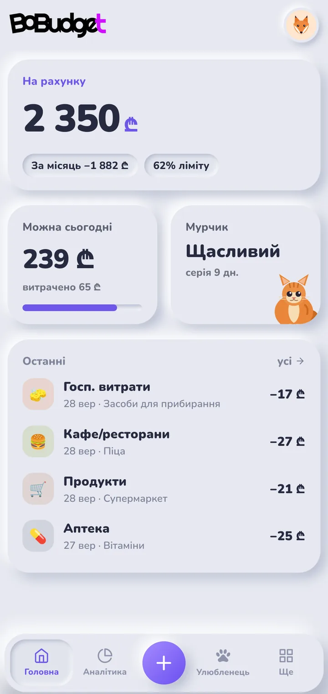
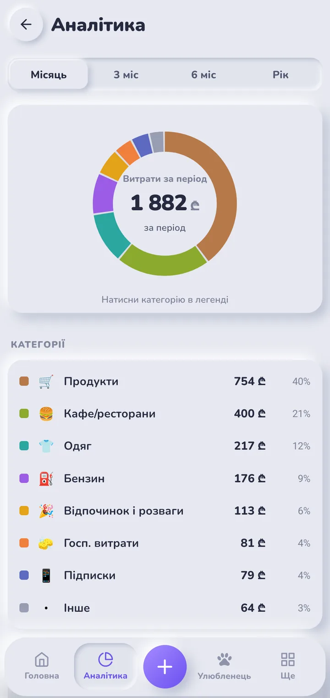
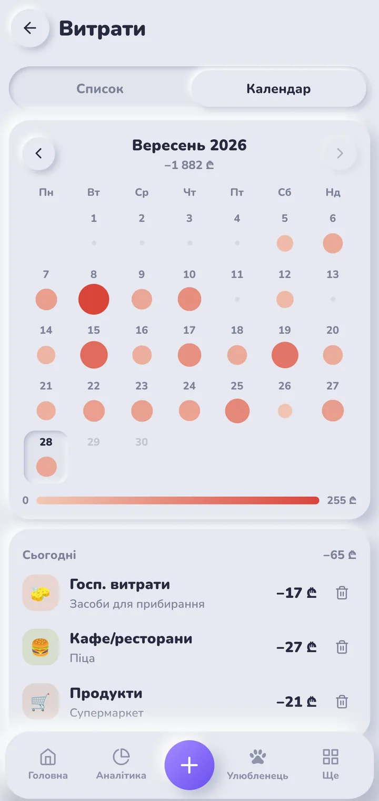
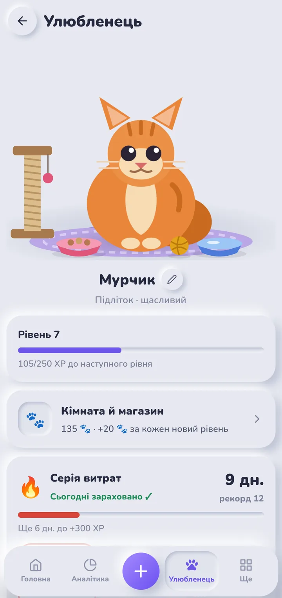
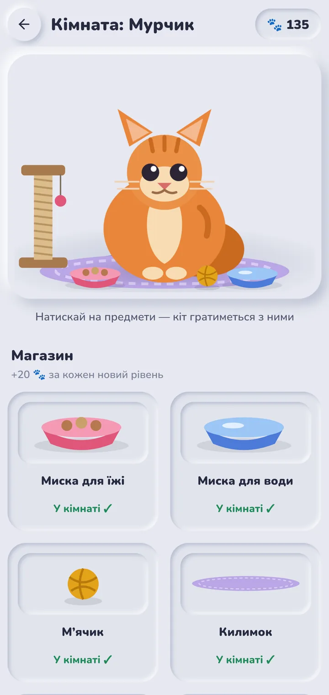
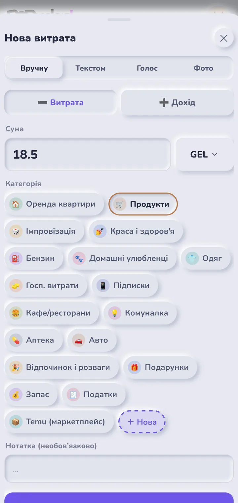

Облік витрат, у який хочеться записувати витрати
Голосом, текстом або за фото чека — BoBudget сам розбере суми й розкладе витрати за категоріями. А ваш кіт стежить, щоб ви не забували.

Запис за секунди
Найнудніше в обліку витрат — записувати. Тому в BoBudget це займає пару секунд.
Голосом
«Кава 5 ларі і таксі 12» — одна фраза, дві витрати, суми й категорії розставлені.
Текстом
Напишіть як зручно, хоч кілька витрат одразу — BoBudget зрозуміє.
За фото чека
Сфотографуйте чек — позиції розпізнаються автоматично.
ProЯк це виглядає





Зрозумілий бюджет
Не таблиця заради таблиці, а відповідь на питання «скільки я можу витратити сьогодні».
Ліміт на день
План на місяць перетворюється на суму, яку спокійно можна витратити сьогодні.
Календар витрат
Одразу видно, які дні були дорогими і чому.
Аналітика
Категорії з кольорами, які ви обираєте самі, і динаміка за місяцями.
Регулярні платежі
Підписки, оренда, зв’язок — нагадування та облік без ручного введення.
Скарбнички
Цілі з прогресом: відпустка, техніка, фінансова подушка.
43 валюти
Витрата в будь-якій валюті перераховується за офіційним курсом на її дату.
Улюбленець, який мотивує
Кожна записана витрата годує вашого кота. Він росте разом із вашою звичкою вести бюджет.
- Досвід і рівні — за кожен запис
- Серії днів — не пропускайте, і кіт буде щасливий
- Лапки — валюта для покупок: лежанка, дряпка, іграшки
- Кімната кота — облаштуйте її на свій смак
Ваші дані — лише ваші
Фінанси — це особисте. BoBudget не показує рекламу і не продає дані.
- PIN-код і біометрія — вхід за відбитком пальця або Face ID
- Шифрування AES-256 — нотатки, тексти голосових, ім’я та email шифруються до запису на сервер
- Без реклами й трекерів — дані не передаються рекламним мережам
- Видалення в один крок — акаунт і всі дані можна видалити будь-коли
BoBudget Pro
Основні функції безкоштовні. Pro — для тих, хто хоче більше:
- Голосове введення без обмежень
- Розпізнавання фото чеків
- AI-аналіз витрат і поради раз на місяць
Підписка оформлюється в застосунку через Google Play або App Store і скасовується будь-коли.
Питання
Скільки це коштує?
Застосунок безкоштовний. Додаткові можливості — у підписці BoBudget Pro.
Де зберігаються мої дані?
На захищеному сервері в Європі. Особисті поля шифруються, усі з’єднання йдуть через HTTPS. Докладно — у політиці конфіденційності.
Як видалити акаунт?
У застосунку: Особистий кабінет → Видалити акаунт. Або без застосунку — на сторінці видалення акаунта.
Коли застосунок з’явиться в магазинах?
Зараз триває тестування. BoBudget уже працює в Telegram — можна спробувати там.
Це фінансова консультація?
Ні. BoBudget — інструмент обліку: рішення ви ухвалюєте самі.